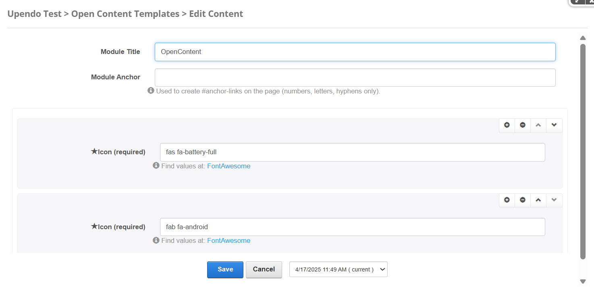
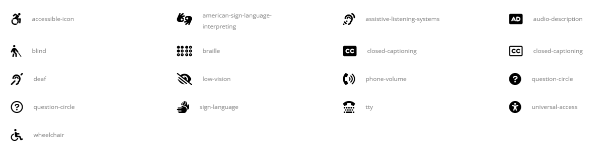

Porto-Icons Documentation
Table of Contents
Overview
The Porto-Icons component allows you to add and customize icons on a website. They can be used to enhance navigation and visual design.. Porto defines the appearance and behavior, while its implementation is managed through OpenContent, providing flexibility in configuration.
For more details, check out the Porto-Icons repository on GitHub or the Porto documentation.
Usage Example
Edit
Properties
| Field Name | Type | Description | Required |
|---|---|---|---|
| ModuleTitle | Text | The title of the module. | No |
| Items | Array | A collection of items to display in the icon boxes. | Yes |
| Icon | Text |
The icon for the item. Example: fab fa-android. Find values at
FontAwesome.
|
Yes |
Views
Notes
Note: The Porto-Icons component is a flexible tool for adding customizable icons
to your website, enhancing both navigation and visual design. Ensure the following properties are configured
correctly:
ModuleTitle: The title of the module (optional).Items: A collection of items to display (required).Icon: The icon for each item. Use values from FontAwesome (required).